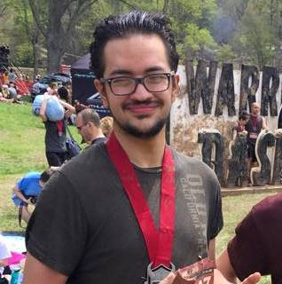
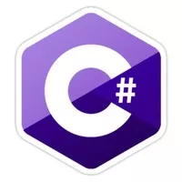
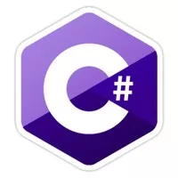

Michael Schmitt
Objective
- I hope to obtain a career in software developement, whether that be in application developement or game dev.
- Amass a great amount of knowledge of many programming languages and concepts
- Use this huge knowledge base that I amassed in the previous objective to create applications for use in all areas of life.
Education
- Georiga Gwinnett College - Software developement major - Fall 2012 - Current
- High School Diploma
Experience
- Internship over 2 summers for Alienware. My assignment was primarily GS Automated
- Web developement for a small business that is no longer active. Including web site hosting, designing, and domain name purchasing.
Skills
 

Knowledge of..
Statement
- Since I was young I had an interest in computers. My first interaction with a computer I would play a single player game for hours on end. This experience gave me
a fun activity to do in my free time. When I entered into high school I was playing a game that introduced me to modding. After taking a look into the code that
the community had written to play the game I was hooked on the back end of video games. After playing around with the same game and modding it to play with my friends
I enrolled in a web developement course offered by my school. This exposure to html and css led me to experiment with sql and php resulting in many simple web sites
that resembled blogs and picture hosting sites. This course opened the door to my knowledge of multiple languages which led me to java. After learning enough java to
make some programs, and even games, I felt comfortable to learn another language. My first real world experience is the opportunity I had with Alienware's reviews department.
By giving me the oportunity to fill a need that had been present I used my drive for knowledge to bring me to a functioning application that the department was to use for
all their testing.